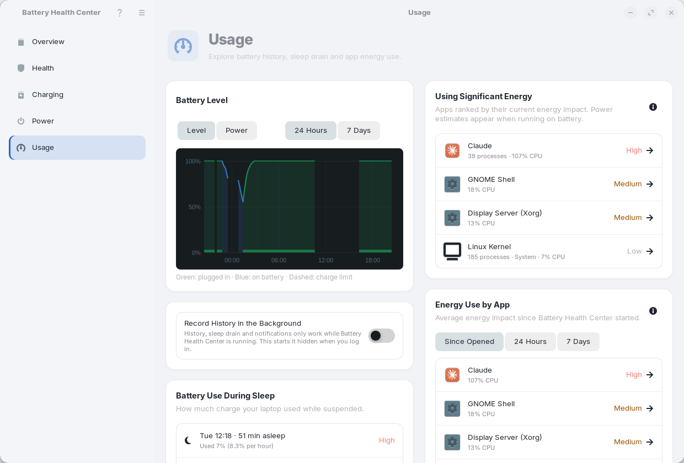
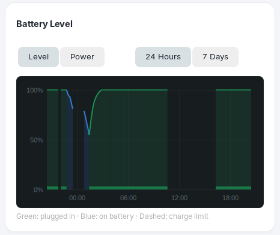
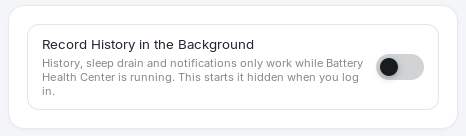
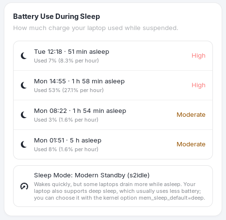
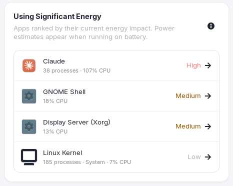
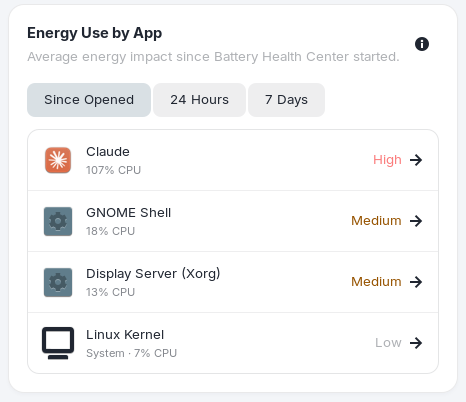
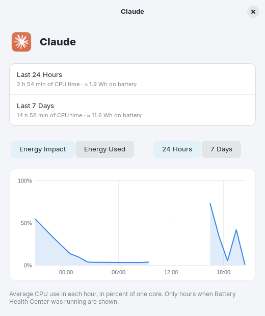

Usage
Battery history, sleep drain and which apps use the most energy.
The Usage page answers "where did my battery go?" It has the history of the battery level and power draw, how much the laptop used while asleep, and the apps that use the most energy.

Battery level and power

Use the two button groups above the chart:
- Level plots the battery percentage. Power plots the power draw in watts: blue is power used on battery, green is charging power.
- 24 Hours or 7 Days sets the range. History is kept for 30 days.
In the level chart, green is plugged in, blue is on battery, and a dashed line marks your charge limit. Periods on the charger also get a thick strip along the bottom, so the chart does not depend on color alone. Gaps are times when the app was not running.
A new install says "Your history starts here" and "Not enough samples in this view yet" until the app has recorded a few minutes. A sample is saved every minute while the app runs.
Record history in the background

History, sleep drain and notifications only work while Battery Health Center is running. This switch adds a login item that starts the app hidden when you log in, so everything keeps working with no window. Open the app from your applications at any time to bring the window up; the hidden copy hands over to it.
After an update the hidden copy notices that its program file was replaced and restarts itself in the new version, within about a minute, once no window is open.
Battery use during sleep

When the app is running before and after the laptop sleeps on battery for at least 15 minutes, it records the session: when it started, how long it slept, and how much battery it used, in percent and in percent per hour. The five most recent sessions are listed.
- High means more than 2% per hour. That is worth investigating, and you also get a notification and an Overview recommendation.
- Moderate is 1% to 2% per hour, and Normal is under 1% per hour.
The Sleep Mode row says how your laptop sleeps:
| Mode | Meaning |
|---|---|
| Modern Standby (s2idle) | Wakes quickly, but some laptops drain more while asleep. If your laptop also supports deep sleep, the row says so and mentions the kernel option mem_sleep_default=deep. |
| Deep Sleep (S3) | The lowest-power sleep mode. |
| Shallow Sleep (S1) | A light sleep mode. |
Apps using the most energy

The Using Significant Energy list at the top right is what to look at when the battery is draining fast right now. It ranks the apps by their current energy impact; when none stands out, it says "No apps are using significant energy". Click an app to see its detail.

The Energy Use by App list covers a longer period: Since Opened (since the app started), 24 Hours or 7 Days. It shows the eight biggest. Each row has:
- the app's name and icon, and how many processes it has (a browser may have dozens);
- its CPU use in percent of one core, and the estimated energy used on battery;
- an impact label: High (40% or more), Medium (10% or more) or Low. System marks background services such as the Linux kernel.
Apps are grouped using the systemd scope that GNOME starts each app in. Apps that move their processes elsewhere (such as Chromium-based browsers) are grouped by their parent process, so a browser is one row, not fifty.
App detail

Click any app to open its detail. It shows the Energy Impact and the Energy Used (an estimate in Wh on battery), with the period set by the 24 Hours / 7 Days buttons, and an hour-by-hour chart of CPU use and energy. Only hours when the app was running are shown, and completed hours are saved for the last 7 days. A new install says "No hourly history yet. Keep the app running to collect activity."